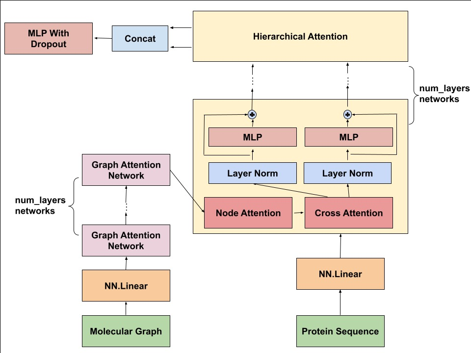
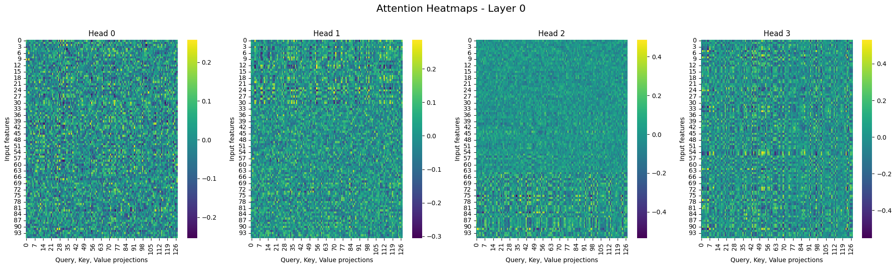
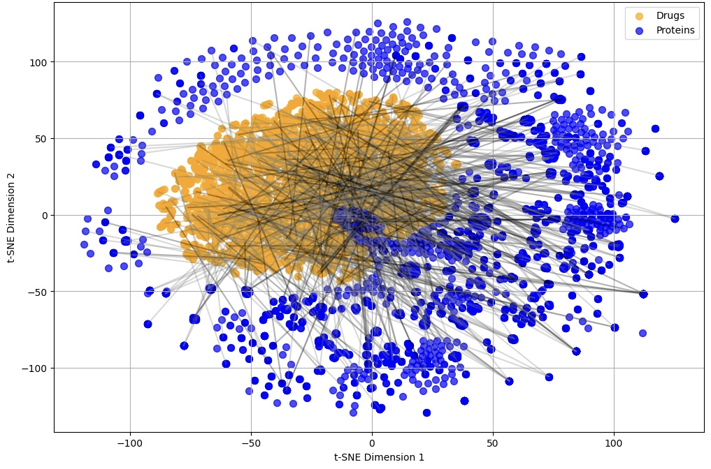

HierDTI: Hierarchical Graph Transformer for Drug-Target Interaction Prediction
Authors: Shrika Eddula, Advay Goel
Course: Final project for 6.7960, MIT
Introduction and Objectives
Drug discovery hinges on understanding the intricate interactions between drug molecules and protein targets, a challenge that sits at the heart of modern biopharmaceutical research. These interactions, governed by complex chemical and biological principles, dictate the efficacy and safety of therapeutic candidates. While traditional computational approaches have made strides in predicting protein-ligand binding, they often fall short of capturing the nuanced, multi-scale interactions essential for precision in drug discovery.
The primary objective of this research is to design a cutting-edge model that deciphers protein-ligand interactions with unprecedented accuracy. Inspired by the hierarchical nature of molecular interactions, we developed the Hierarchical Graph Transformer—a novel architecture that integrates molecular graph-based learning and protein sequence encoding through cross-modality attention mechanisms. By bridging atomic-level molecular features with sequence-level protein data, this model aims to predict binding affinities with both precision and interpretability.
This effort is grounded in the broader goal of advancing computational methods in drug discovery, making the process faster, more reliable, and accessible. By capturing the subtle interplay between molecular structure and biological function, our approach not only pushes the boundaries of predictive modeling but also paves the way for a deeper understanding of protein-ligand dynamics, offering transformative potential for therapeutic innovation.
Literature Review
Traditional computational methods for predicting protein-ligand binding have made significant progress but often fall short in capturing the full complexity of these interactions. For example, structure-based methods like molecular docking have limitations in accurately predicting binding affinities across diverse protein-ligand pairs [1].
Many existing models focus on either molecular structure or protein sequence information, but not both simultaneously. For instance, graph-based models have shown promise in representing molecular structures [2], while sequence-based models have been effective for proteins [3]. However, this separation overlooks the complementary nature of these data types. Deep learning approaches have introduced promising solutions, but they often struggle with computational efficiency when dealing with large-scale datasets [4]. Furthermore, many current deep learning models for drug discovery act as "black boxes," making it difficult to understand the basis of their predictions [5], thus highlighting the need for improved interpretability.
Existing models often focus on a single scale of molecular interactions, either at the atomic level or at a coarser resolution [6]. Lastly, many current approaches struggle to generalize well across diverse protein targets and chemical spaces [7]. By learning from a large dataset (BindingDB) and employing a flexible architecture, the proposed project aims to develop a more generalizable model for protein-ligand interaction prediction.
Recent advancements in deep learning have addressed key challenges in protein-ligand binding prediction. CAPLA introduced a cross-attention mechanism to capture interactions between protein-binding pockets and ligands, offering both superior accuracy and interpretability by identifying critical functional residues. Similarly, IGModel utilized geometric graph neural networks to integrate spatial and orientation features, achieving state-of-the-art performance in predicting binding strength and docking pose accuracy on challenging datasets like CASF-2016.
Inspired by these advancements, our Hierarchical Graph Transformer combines CAPLA’s cross-attention and IGModel’s geometric representation into a unified framework. By integrating molecular graphs and protein sequences, our model captures fine-grained ligand-protein interactions with multi-scale hierarchical attention, ensuring high accuracy, interpretability, and computational efficiency.
Methodology
Dataset
We processed the BindingDB dataset from its original SDF format into a structured format optimized for deep learning. The preprocessing pipeline extracted three key components for each drug-target interaction: the SMILES representation of the drug, the amino acid sequence of the target protein, and the binding affinity values. All binding measurements (Ki, Kd, and IC50) were standardized by converting them to their negative logarithmic form (pKi, pKd, and pIC50, respectively), prioritizing Ki over Kd and IC50 when multiple values were available. To ensure uniformity, values were converted from nanomolar to molar concentration before applying the logarithmic transformation. Rigorous quality control steps included filtering out entries with missing or invalid values, removing samples without protein sequences, and eliminating duplicates. For computational feasibility, the dataset was limited to 50,000 unique drug-target pairs, with the final dataset containing SMILES strings, corresponding protein sequences, and normalized binding affinity values stored in a CSV format.
Pre-Processing
Our data processing workflow was built on a three-tier architecture designed to handle drug-target interaction data efficiently. The MoleculeEncoder transformed SMILES representations into molecular graphs using the PyTorch Geometric framework, capturing atomic features such as atomic numbers, bond degrees, formal charges, chirality, hybridization, and aromaticity, while preserving molecular topology. The ProteinEncoder processed amino acid sequences through one-hot encoding and advanced mechanisms to manage variable-length inputs. Finally, a custom DTIDataset class integrated both encoders within PyTorch, enabling end-to-end data preparation. This included binding affinity normalization, invalid SMILES filtering, and efficient batch processing, ensuring robust handling of the BindingDB data while maintaining computational efficiency during model training. This architecture was implemented to ensure that the data representation aligns with the requirements of our deep learning model while preserving the biochemical and structural information critical for accurate drug-target interaction predictions.
Model Architecture
Our Hierarchical Graph Transformer model was designed to address a central challenge in drug discovery: accurately predicting the interactions between small molecules (ligands) and protein targets. By leveraging a hierarchical attention-based architecture, the model integrates molecular structure and protein sequence information, capturing complex biochemical interactions at multiple scales. In addition to this novel architecture, we also constructed a control architecture, the MoleculeTransformer, which employs a simpler single-level attention mechanism by concatenating molecular and protein features before processing them with a Transformer encoder. This comparison allowed us to assess the value of hierarchical attention and multi-scale representation learning in advancing protein-ligand binding predictions. At the foundation of the model lies the HierarchicalGraphTransformer class, a multi-layered framework designed to balance computational efficiency and representational power. The architecture employs a hidden dimension of 128, distributed across 4 attention heads and 3 hierarchical layers. These settings were selected to enable the model to process diverse molecular features while maintaining efficiency. Molecular features are projected from a 124-dimensional space and processed through Graph Attention Network (GAT) layers to capture atomic-level interactions. Similarly, protein sequences are encoded into the same latent space using specialized projection layers.
Model Architecture
Hierarchical Attention Mechanism
The hallmark of our architecture is the hierarchical attention mechanism, implemented through a two-tier design:
- Node-Level Attention: Within each modality, a multi-head self-attention mechanism captures local structural patterns. Atoms in molecular graphs attend to relevant neighbors, while amino acid residues in protein sequences capture sequence-level interactions. This ensures that both modalities are independently represented in rich latent spaces.
- Cross-Modality Attention: Information from the molecular and protein representations is exchanged bidirectionally through cross-attention layers. This mechanism enables the model to integrate complementary features from both modalities, creating a unified representation of the ligand-target interaction.
Experiments and Results
We trained our Hierarchical Graph Transformer on the BindingDB dataset over 75 epochs using an Adam optimizer. To provide a baseline for the utility of our architecture, we also trained a vanilla Transformer network with an encoder layer, attention head, input projection, and regression head.
The test results clearly indicate that the Hierarchical Graph Transformer has far superior performance than the vanilla Transformer network. The MSE loss of 0.4317 is relatively decent, especially when compared to the 1.0181 loss experienced by the Vanilla transformer. Moreover, the correlations of 0.7581 and 0.7483 are strong, indicating that our model truly learned important patterns and features.
| Metric | Value |
|---|---|
| Test Loss (MSE) | 1.0181 |
| Test MAE | 0.8220 |
| Pearson Correlation | 0.0013 |
| Spearman Correlation | 0.0057 |
| Metric | Value |
|---|---|
| Test Loss (MSE) | 0.4317 |
| Test MAE | 0.5181 |
| Pearson Correlation | 0.7581 |
| Spearman Correlation | 0.7483 |
Attention Heatmaps
To further understand the role of Hierarchical Attention, we created heatmaps to track activations and QKV projections over a batch of data. The results were interesting, with layer 0 primarily having lots of attention close to 0 with some noise, layer 1 having much more noise, and parts of layer 2 having even more. Heads 0 and 1 of layer 2 have many high-magnitude projections, potentially indicating that a lot of important context is learned in that layer. Moreover, in the final heads, almost all of the features are zeroed out, showing that perhaps the few non-zero features are the most important. Or, this may also indicate that this layer is not needed and we may have obtained similar results by training a new model on just 2 hierarchical attention layers.
Figure 5: Attention heatmaps by layer and head.
Analysis of Drug and Protein Embeddings
To evaluate the model's representation learning capabilities, we visualized the learned embeddings of drug-target interactions (DTIs) through dimensionality reduction. By applying t-distributed stochastic neighbor embedding (t-SNE), we projected both drug and protein representations from the test set into a unified two-dimensional space. Figure 7 illustrates the resulting visualization, where drugs appear as orange circles and proteins as blue squares, with predicted interactions represented by gray connecting lines. The visualization employs a dual-intensity scheme, where darker markers indicate positive samples and lighter markers denote negative samples from the test set.
Figure 6: Drug Protein Embeddings Visualization.
The projection reveals several key insights about our model's performance. First, the clear separation between drug and protein clusters demonstrates the model's ability to learn distinct, modality-specific features while maintaining relationship information through the interaction space. Second, the distribution of connecting lines between positive samples shows strong alignment patterns, suggesting the model successfully captures meaningful drug-target binding relationships. These qualitative observations reinforce our quantitative performance metrics and provide visual evidence of the model's effectiveness in learning representations suitable for DTI prediction.
Ablation Studies
Motivated by the significantly different heatmaps in hierarchical attention, we ran an ablation study to ascertain the importance of each layer. Our results are shown below.
Figure 7: Performance Metrics for Different Model Configurations
| Model Configuration | Test Loss (MSE) | Test MAE | Pearson Correlation | Spearman Correlation |
|---|---|---|---|---|
| Original Model | 0.4317 | 0.5181 | 0.7581 | 0.7483 |
| No Attention Layer | 1.9677 | 1.1524 | -0.0712 | -0.1078 |
| First Layer Removed | 0.4539 | 0.5287 | 0.7520 | 0.7459 |
| Second Layer Removed | 0.4513 | 0.5277 | 0.7523 | 0.7463 |
| Third Layer Removed | 3.0973 | 1.5670 | 0.6127 | 0.6119 |
| First + Second Layers Removed | 7.1351 | 1.8861 | -0.0966 | -0.0302 |
| First + Third Layers Removed | 2.1941 | 1.2031 | 0.5292 | 0.5180 |
| Second + Third Layers Removed | 18.1500 | 3.4020 | -0.0108 | 0.1509 |
Interestingly, the model performance was relatively constant even after removing the first or second hierarchical attention layer. There was a slight dip in performance, but the change is not large.
However, it seems that the third layer is crucial as in every instance of its removal, performance statistics plummeted heavily. This makes sense since the predictor network is trained on the output of the third layer. So, its removal causes a large input distribution shift for the predictor, hindering its utility.
Additionally, removing any 2 layers has the worst performance by far. This is likely because each layer learns some representations and features, but multiple layers are required in order for the output to be in a format which the predictor can do well on.
Discussion and Conclusions
Our study presents the Hierarchical Graph Transformer as a novel approach to predicting protein-ligand interactions, addressing the limitations of existing methods in representational learning, interpretability, and scalability. By leveraging a hierarchical attention mechanism, the model captures the intricacies of drug-protein interactions across multiple levels, from atomic details to global properties. The integration of node-level and cross-modality attention allowed for meaningful exchanges between molecular and protein representations, enhancing the model’s predictive accuracy and interpretability.
The experimental results strongly validate the effectiveness of our Hierarchical Graph Transformer. Compared to a baseline vanilla Transformer, our model achieved substantial improvements across all key metrics, including test loss, mean absolute error, and correlation coefficients. The t-SNE visualization further supported these results, showcasing distinct modality-specific clusters and meaningful interaction patterns between drugs and proteins. Ablation studies highlighted the importance of the hierarchical attention layers, particularly the third layer, which proved critical for refining representations and ensuring accurate predictions.
The model’s ability to maintain high performance despite the removal of certain attention layers demonstrates its robustness and redundancy in feature representation. However, the sharp decline in performance upon removing the third layer underscores its pivotal role in shaping final outputs, emphasizing the need for thoughtful architectural design that balances hierarchical complexity and downstream utility.
In conclusion, the Hierarchical Graph Transformer successfully combines interpretability, scalability, and precision, marking a significant advancement in computational drug discovery. Beyond achieving state-of-the-art performance, the model provides valuable insights into the biological mechanisms underlying protein-ligand interactions, establishing a versatile framework for therapeutic innovation.
Challenges and Future Directions
Despite its strengths, our approach faces several challenges. First, the computational cost of training hierarchical attention models remains high, particularly for large datasets like BindingDB. Future work could explore methods to improve efficiency, such as leveraging sparsity in molecular graphs or adopting lightweight attention mechanisms. Additionally, while our model demonstrated strong generalizability across diverse proteins and ligands, its performance on highly novel protein-ligand pairs could be further assessed. Addressing this would involve incorporating unsupervised pre training or transfer learning approaches to improve generalization to unseen chemical or biological spaces.
Another key challenge lies in interpretability. While attention mechanisms provide some level of explanation, they may not fully capture the underlying biophysical principles. Future work could integrate domain-specific priors, such as docking simulations or molecular dynamics, into the model to provide more biologically grounded insights.
Lastly, while our ablation studies provided valuable insights into the architecture, future studies could explore alternative designs, such as varying the number of attention heads or introducing convolutional components to complement the attention mechanism. Additionally, extending the model to predict other properties, such as drug efficacy or toxicity, would broaden its utility in drug discovery.